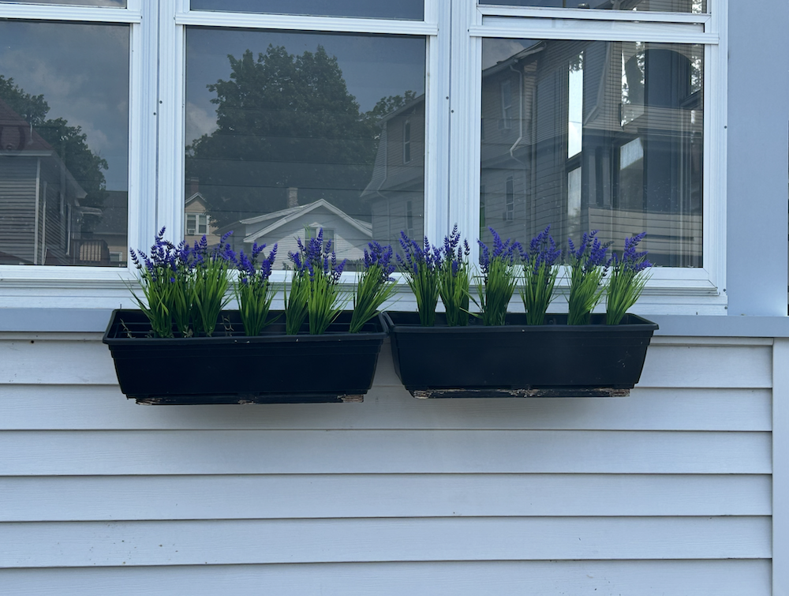

Hi There!
Thank you so much for choosing to stay at our home during your visit to Worcester. This is our
second home, where we stay whenever we’re in town, and we hope you love it as much as we do.
You’ll have access to the entire first-floor unit, with the exception of the room to the right
of the TV. No need to worry—this space is simply where we store our personal belongings.
Below, you’ll find some helpful information about your home-away-from-home.
If you need assistance during your stay, feel free to text or call me (Sarah) at
(774) 280-2445. I primarily reside on the West Coast and am
typically available between 12 PM and 1 AM EST.
For emergencies outside of those hours, you can reach Christine at
(508) 341-6454. Please note that responses may be slower
during the middle of the night.
This home offers self-check-in, and you’re welcome to enter anytime after 4:00
PM.
Please note: Entry before 4:00 PM is not permitted unless we’ve explicitly granted early access.
Check-out is at 11:00 AM. We have an amazing cleaner, and if you’re able, we’d
greatly appreciate it if you could start a load of towels before heading out—it helps make the
turnover a little easier for her.
When possible, we’re happy to accommodate early check-in or late check-out requests. Just send
us a message at least 24 hours before your arrival or departure so we can check our calendar and
see if it’s feasible.
422 Chandler St. Worcester, MA 01602
- Unit 1
There is one designated parking spot—please park directly in front of the flower pots with the
purple flowers.

For any additional vehicles, street parking in the area is free and generally easy to find, so
you should have no trouble securing extra spots if needed.
For your convenience, the home is equipped with an electronic lock system—no keys required!
This unit is part of a multifamily house, so you’ll need two codes to access it:
-
Front Door (Shared Entry): When you approach the first door, you’ll see a
silver lock. This provides access to the shared entryway. The code is 1483.
-
Unit Door (Private Entry): Once inside, the unit is directly ahead on your
left. Your personalized code will be active during your reservation and will be sent to you
by Airbnb the day before your arrival.
Network name: Woo-Tang
Password: bubby112